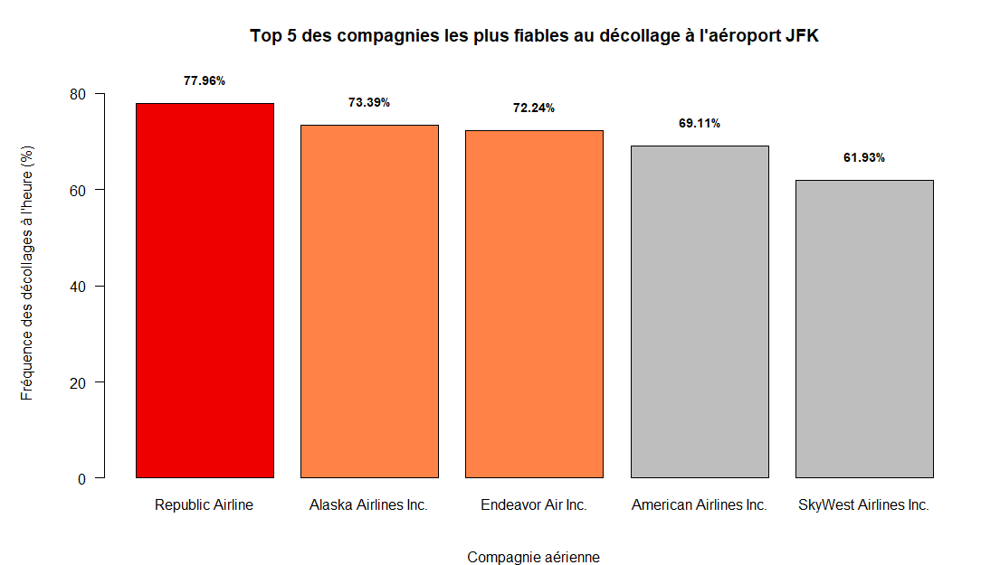

Analyse du trafic aérien à New York

Contexte
Étude du trafic aérien des aéroports JFK, LGA et EWR afin d’identifier les principaux facteurs associés aux retards et aux annulations de vols.
Méthode
Analyse exploratoire des données, création de graphiques et calcul d’indicateurs statistiques.
Résultats
L’analyse montre une forte relation entre les retards au départ et à l’arrivée, tandis que les conditions météorologiques, notamment un point de rosée élevé, sont associées à davantage d’annulations.